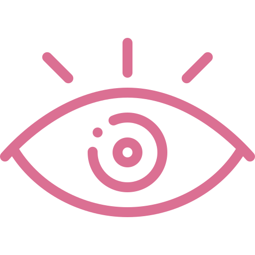

Visión
Nuestra visión es constituirnos como el laboratorio clínico
preferido preferido, reconocido por su excelencia en servicio y calidad
Misión
Ser un laboratorio clínico que proporcione la atención oportuna con calidad y calidez mediante los análisis clínicos realizados con equipos de vanguardia, para contribuir en el diagnostico, pronostico y tratamiento de de la enfermedad de nuestros pacientes, trabajando en equipo para lograr continuar con el crecimiento institucional.
Políticas de Calidad
Nuestra política de calidad se manifiesta mediante nuestro firme compromiso con los clientes de satisfacer plenamente sus requerimientos y expectativas, para ello garantizamos impulsar una cultura de calidad basada en los principios de honestidad, liderazgo y desarrollo del recurso humano, solidaridad, compromiso de mejora y seguridad en nuestras operaciones